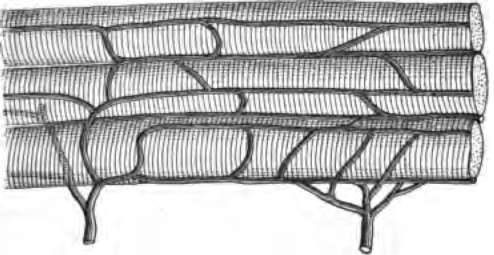

The Muscles And Exercise. Continued
Description
This section is from the book "The Human Body And Health", by Alvin Davison. Also available from Amazon: The Human Body and Health.
The Muscles And Exercise. Continued
Exercise is also of great service in pressing the lymph with its waste matter out of its chinks and crevices into the lymph channels. The pressure of the muscles as they contract, squeezes on the lymph and blood vessels, so as to help the circulation. Since the whole body has its waste carried away and an abundance of life-giving oxygen supplied by exercise, one always feels better after a vigorous walk or the playing of an outdoor game.
How To Exercise
Since nearly every one is obliged to do some walking, certain muscles of the legs are sure to get some exercise. In ordinary walking, however, less than one half of the hundred muscles in the legs are brought into use. To get the best exercise out of walking one must walk as fast as possible, and let the arms swing to and fro at the sides. The chin should be held in, the chest pushed out, and the neck thrown back against the collar.
A regular period of one or two hours should be devoted to exercise every day. Boys and girls who live on the farm or have gardens to care for, may bring into use nearly all the muscles in attending to the various duties about the home. The muscles least likely to get the proper exercise and the ones needing it most are those of the chest.
Cause Of Round Shoulders And Flat Chests
The lungs cannot be kept strong and healthy without being fully expanded. There must be plenty of space in the chest cavity to let them expand. The size of the chest will depend upon the exercise of the lungs and the muscles of the chest. Very few duties in life call these muscles into vigorous use. They are, therefore, often weak and when one sits down they permit the shoulders to droop, the head to bend forward, and the chest to be pushed inward. Even in standing a similar position is often taken.
Fig. 107. One way to exercise.
Preventing Round Shoulders And Flat Chests
Weak lungs can often be avoided, and many of the quarter-million deaths in this country from lung diseases prevented by proper exercise. The practice of taking in full breaths, for a few minutes each day, when out in the open air should become a habit. This enlarges the chest. This exercise will be still more effective if, while the lungs are full of air, the chest is beat lightly with the hand. Ten or fifteen minutes daily should be spent in swinging the arms upward and downward, and forward, outward and backward until the hands meet in front and behind the back.
Fig. 108. The chest muscles which need exercise to strengthen the lungs, r, rib; s, breastbone; m, and n, important muscles in breathing.
Fig. 109. Graceful and ungraceful attitudes in standing. The latter causes round shoulders and weak lungs.
Forming the habit of sitting erect at a table or desk, and of walking with the shoulders well thrown back will do much to develop a well-formed body and promote health.
The Best Games For Exercise
Exercise can do much more than medicine to give good health. It is almost as important to play as to work. Games like cards, checkers and dominoes may help to keep boys and girls, and even older persons, out of mischief, but they do not make the body strong and ready for the great work of life like games played in the open air, calling into use the muscles.
Swimming, rowing and running are excellent forms of exercise, but they must not be carried to excess. Baseball, shinny and skating are also splendid games for bringing into use many muscles. Tennis, however, is the best game of all for exercising the largest number of muscles, and especially those of the chest. When games cannot be played in the open air, the gymnasium offers many helpful forms of exercise which both boys and girls should use in helping to build strong bodies and insure long life and health.
Fig. 110. Blood vessels of a muscle which are affected by much use of tobacco.
Tobacco And The Muscles
Nicotine causes the involuntary muscles of the small blood vessels to contract, and thus shut off some of the nourishment intended for the growth of the muscles. The habitual use of tobacco affects the growth of the young in a very marked degree.
At Yale College during four years the non-users of tobacco gained one fourth more in height, and in the girth of the chest, than the habitual users of tobacco. Doctor Seaver, of New Haven, found on examining a large number of young men, that the tobacco users at 18 years of age were not so large and well developed as the non-users only 17 years old. These facts show that the use of much tobacco, either by smoking or chewing, is quite certain to hinder the full growth of the muscles.
Those who have had much experience with boys say that smokers are not able to control their muscles accurately, and that they can discover the tobacco users by noting the trembling of the hand when they try to hold it perfectly still or attempt to draw a straight line.
How Alcohol Affects The Muscles
Alcohol may stimulate the muscles for a few minutes, somewhat in the same way that a whip urges forward a horse, but recent experiments all agree in showing that the daily amount of work accomplished by men using alcohol is always less than that done by the total abstainers. On this account no athlete while in training makes use of whisky, wine or beer. Soldiers on forced marches are found to make better progress when denied the use of alcohol and given beef tea. Brigadier General A. W. Greely says it should be strongly urged that no alcoholic drink be used by soldiers undergoing great physical hardship and continued exhausting labor.
Practical Questions
1. What is a muscle? 2. Of what is a muscle made? 3, Tell something about the arrangement of muscles. 4. What is a tendon? 5. What action has a muscle? 6. Name two kinds of muscles. 7. Where are the involuntary muscles found? 8. Where are the extensor muscles on the arm? 9. What is the use of flexor muscles? 10. What makes a muscle become strong? 11. Why does exercise make one feel good? 12. Why do many persons have round shoulders? 13. How may flat chests be prevented? 14. Name some good forms of exercise. 15. Give facts showing that tobacco injures muscles. 16. What shows that alcohol does not help the muscles do good work?
Suggestions For The Teacher
During the study of this Chapter, a special effort should be made by the pupils to learn how to stand properly and walk gracefully. A few minutes daily exercise directed by the teacher will do much to correct the drooping shoulders and awkward shuffling gait common to many school children.
Continue to:
- prev: Chapter XV. The Muscles And Exercise
- Table of Contents
- next: Chapter XVI. How The Body Is Governed